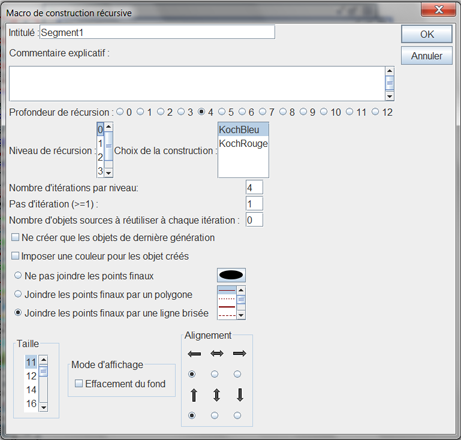
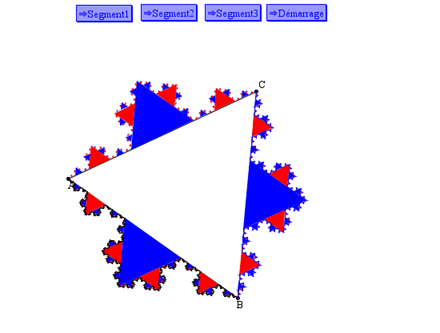

Exemple d'une construction récursive pour créer un flocon de Von Koch.
Une construction est dite implémentée de façon récursive lorsqu'elle s'appelle elle-même sur plusieurs niveaux de profondeur.
Nous allons d'abord créer la construction qui sera ensuite implémentée de façon récursive.
Créez une nouvelle figure vierge et vérifiez que son unité est bien le degré (menu Options - Figure en cours).
Nous partirons de deux points libres que nous appellerons A et B (icône  ).
).
Le premier point final de notre construction sera un clone du point A. Utilisez pour cela le menu Créer - Clone d'objet et cliquez sur le point A.
Le second point final sera un point situé au tiers du segment [AB] à partir de A. Utilisez pour cela l'icône  . Cliquez sur le point A (centre de l'homothétie, vous choisirez le point clone, mais ce n'est pas important)). Dans la boîte de dialogue, entrez 1/3 comme rapport puis cliquez sur le point B. Nous appellerons C le nouveau point créé.
. Cliquez sur le point A (centre de l'homothétie, vous choisirez le point clone, mais ce n'est pas important)). Dans la boîte de dialogue, entrez 1/3 comme rapport puis cliquez sur le point B. Nous appellerons C le nouveau point créé.
Créez maintenant l'image du clone de A dans la rotation de centre C et d'angle - 120° (icône  ). Nous appellerons ce point D.
). Nous appellerons ce point D.
Créez maintenant le milieu du segment [CB] (icône  ). Nous appellerons ce point E.
). Nous appellerons ce point E.
Créez pour finir un point clone du point B avec le menu Créer - Clone d'objet.
Utilisez maintenant l'icône de création de polygone  . Cliquez sur les points C, D et E puis clic droit pour fermer le polygone.
. Cliquez sur les points C, D et E puis clic droit pour fermer le polygone.
Dans la palette de couleurs, activez la couleur bleue. Cliquez sur l'icône  de création de surface puis cliquez sur le polygone. Maintenant gommez le polygone (icône
de création de surface puis cliquez sur le polygone. Maintenant gommez le polygone (icône  ).
).
Nous allons maintenant créer la construction. Celle-ci ne comporte que des objets sources graphiques.
Utilisez le menu Constructions - Choix des objets sources - Graphiques. Cliquez, dans cet ordre, sur A et B (il s'agit des points libres) puis clic droit pour finir.
Maintenant désignons les objets finaux qui sont tous graphiques.
Utilisez le menu Constructions - Choix des objets finaux - Graphiques. Cliquez sur le clone du point A, le point C, le point D, le point E, le clone du point B et sur la surface.
Avant de finir notre construction, nous allons cacher les points finaux créés. Utilisez l'icône pour masquer le clone de A, les points C, D et E et le clone de B.
Maintenant utilisez le menu Constructions - Finir la construction en cours.
Nommez cette construction KochBleu.
Maintenant, activez la couleur rouge dans la palette de couleurs et utilisez l'icône  pour changer la couleur de la surface.
pour changer la couleur de la surface.
Utilisez l'outil  pour rendre de nouveau visibles le clone de A, les points C, D, E et le clone de B.
pour rendre de nouveau visibles le clone de A, les points C, D, E et le clone de B.
Recommencez alors de nouveau la même procédure que précédemment pour créer une construction nommée KochRouge (n'oubliez pas le masquer les 5 points finaux avant de finir la construction).

A l'aide du menu Constructions - Enregistrer une construction de la figure dans un fichier, sauvegardez les deux constructions KochBleu et KochRouge à l'emplacement de votre choix.
Nous allons maintenant créer une macro qui implémentera cette construction de façon récursive dans une nouvelle figure.
Créez une nouvelle figure (avec pour unité d'angle le degré).
Utilisez le menu Constructions - Incorporer une construction dans la figure depuis un fichier et incorporez les deux constructions précédentes dans la figure.
Créez deux points libres que nous appellerons A et B puis utilisez l'outil  pour créer un triangle équilatéral direct. Appelez le nouveau point créé C.
pour créer un triangle équilatéral direct. Appelez le nouveau point créé C.
Utilisez maintenant le menu Macro - Nouvelle macro - Macro de construction - Récursive.
Remplissez la boîte de dialogue comme ci-dessous. Choisissez 4 comme profondeur de récursion.
En cliquant dans la liste des niveaux de récursion, affectez alternativement les constructions KochBleu et KochRouge aux niveaux 0, 1, 2, 3 et 4. Cochez la case Joindre les points finaux par une ligne brisée.

Une fois la boîte de dialogue remplie, cliquez sur B puis sur A (dans cet ordre).
Créez de la même façon une deuxième macro de construction récursive Segment2 qui fera la même chose pour les points A et C, puis une troisième nommée Segment3 pour les points C et B.
Sauvegardez la figure (avant d'essayer d'exécuter les macros).
Vous pouvez exécuter les macros pour vérifier qu'elles fonctionnent bien mais n'oubliez pas d'annuler avec l'outil  avant de sauvegarder à nouveau la figure car, une fois les macros exécutées, la figure contient des milliers d'objets.
avant de sauvegarder à nouveau la figure car, une fois les macros exécutées, la figure contient des milliers d'objets.
Nous allons maintenant expliquer comment faire pour que ces trois macros soient exécutées au chargement de la figure.
Auparavant, il est préférable d'enregistrer à nouveau la figure sous un nouveau nom.
Utilisez le menu Macros - Nouvelle macro - Exécution d'une suite de macros et créez une macro exécutant les trois macros Segment1, Segment2 et Segment3. Nommez par exemple cette macro Démarrage.
Maintenant, utilisez le menu Options - Figure en cours, cliquez sur l'onglet Macro de démarrage et sélectionnez la macro Démarrage.
Enregistrez à nouveau cette figure et fermez la.
Au prochain démarrage, quand vous ouvrirez cette figure, la construction du flocon sera automatique.
Mais attention : Si vous sauvegardez à nouveau cette figure, le fichier obtenu sera très gros car, une fois la macro Démarrage exécutée, la figure contient des dizaines de milliers d'objets.

Remarque : Il est aussi possible d'implémenter une construction de façon récursive sans utiliser de macro avec le menu Construction - Implémenter une construction de façon récursive.
Explications : Reprenons les notations de la première figure.
La construction est d'abord appliquée au niveau 0 : cinq points sont créés et la surface. Ensuite la construction est de nouveau appelée pour les points clone de A et C, puis C et D, puis D et E, puis E et clone de B. Mais, à chaque appel, la construction s'appelle encore elle-même pour les points créés et ce jusqu'à la profondeur demandée.
Le pas d'itération est de 1 puisque, une fois la construction appelée par exemple pour les points clone de A et C on l'appelle ensuite pour C et D et ainsi de suite. On saute donc un objet final à chaque fois avant de réimplanter la construction et ce quatre fois de suite. Le nombre d'itérations par niveau est donc de 4.
Comme nous l'avons demandé, les points créés à la dernière génération d'appels sont tous joints par une ligne brisée.
Created with the Personal Edition of HelpNDoc: Easily create Web Help sites